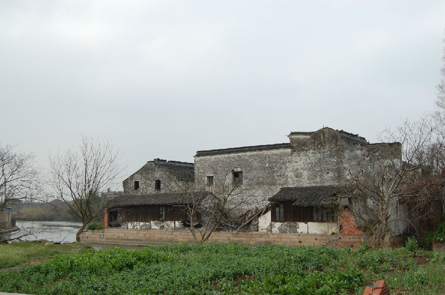

嘉兴市文物保护网 · 市级文物保护点 · 2020-11-09 · 原文

石佛寺冯氏老宅建筑群位于嘉兴市南湖区凤桥镇三星村，原石佛寺自然村杨庙堂塘西岸，凤余公路北侧，共占地2000余平方米，由自西向东并排三栋房屋组成。最西侧为一栋独立平房，据所有人介绍此宅建造时间为清；中间一栋宅院为南北排列的两间房屋组成，两屋中轴对称，南侧一间为二进式，北侧一间与南屋间隔7米余，现为粮仓，层高7米余，当地人称旧为“堂屋”，据所有人介绍此宅为清同治时期冯守六建造。最东侧一栋宅院为三进式，前二进为两层楼房，第三进为“堂屋”。东沿杨庙塘建有石码头，上有小屋两间，据所有人介绍此宅为民国3、4年间，当地人冯仲卿建造。西侧两宅为江南风格的建筑，最东侧临河的三进宅院，则具徽派建筑的特点，其以砖、木、石为原料，以木构架为主，抬梁式与穿枋式并存，梁架用料硕大，大梁及梁托等处均雕有纹饰，门罩等处亦有大幅雕饰，中院马头墙相对而立，墙面绘有清供壁画。冯氏老宅建筑群的建筑风格在嘉兴的传统民居中尤为少见，是徽派建筑与江南传统建筑风格的融合，从建筑艺术角度来看，具有很高的保存价值。另外，它还反映了特定历史时期两地的文化交流，具有很高的历史和文物价值。2009年公布为嘉兴市文物保护点。